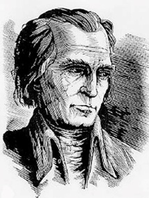

Kristijonas Donelaitis – vienas svarbiausių lietuvių literatūros pradininkų. Jis buvo poetas ir evangelikų liuteronų kunigas, didžiąją savo gyvenimo dalį praleidęs Mažojoje Lietuvoje.
Apie autorių
Kristijonas Donelaitis gimė 1714 m. sausio 1 d. Lazdynėlių kaime, netoli Gumbinės, Mažojoje Lietuvoje. Jis augo laisvųjų valstiečių šeimoje. Nuo jaunystės domėjosi mokslu ir siekė išsilavinimo. Vėliau išvyko mokytis į Karaliaučių, kur lankė mokyklą ir studijavo universitete.
Baigęs studijas, Donelaitis dirbo mokytoju Stalupėnuose, o 1743 m. tapo Tolminkiemio evangelikų liuteronų parapijos kunigu. Šioje vietovėje jis praleido daugiau nei trisdešimt metų. Kunigo darbas leido gerai pažinti vietos žmones, jų kasdienybę, rūpesčius, papročius ir gyvenimo sąlygas.
Donelaitis buvo įvairiapusė asmenybė. Jis domėjosi ne tik literatūra, bet ir muzika, gamta bei technika. Mokėjo kelias kalbas, grojo įvairiais instrumentais ir net gamino muzikos instrumentus. Jo pomėgiai ir atidus aplinkos stebėjimas atsispindi ir kūryboje.
Žymiausias kūrinys – „Metai“
Svarbiausias Kristijono Donelaičio kūrinys yra poema „Metai“. Joje vaizduojamas XVIII a. Mažosios Lietuvos valstiečių gyvenimas, jų kasdieniai darbai, džiaugsmai, sunkumai ir santykis su gamta. Autorius daug dėmesio skiria paprastų žmonių gyvenimui ir jų elgesiui.
Poema suskirstyta į keturias dalis pagal metų laikus: „Pavasario linksmybės“, „Vasaros darbai“, „Rudenio gėrybės“ ir „Žiemos rūpesčiai“. Kiekviena dalis atskleidžia skirtingus gamtos pokyčius ir žmonių gyvenimo išbandymus.
Kūrinyje Donelaitis pabrėžia darbštumo, sąžiningumo, atsakomybės, kuklumo ir pagarbos tradicijoms svarbą. Jis kritikuoja tinginystę, godumą ir nepagarbų elgesį. Šias mintis perteikia per veikėjus, jų poelgius ir kasdienius pokalbius.
Vienas iš išskirtinių kūrinio bruožų yra hegzametras – antikinėje literatūroje naudotas eiliavimo būdas. Donelaitis jį pritaikė lietuvių kalbai, todėl „Metai“ tapo išskirtiniu kūriniu ne tik dėl savo turinio, bet ir dėl literatūrinės formos.
Kitos kūrybos sritys
Be poemos „Metai“, Donelaitis kūrė ir pasakėčias. Jose dažnai vaizduojami gyvūnai, kurių elgesys primena žmonių savybes. Pasakėčiomis autorius siekė pamokyti skaitytojus, parodyti netinkamo elgesio pasekmes ir paskatinti susimąstyti apie žmogaus vertybes.
Nors didžiausią pripažinimą pelnė poema „Metai“, jo pasakėčios taip pat yra svarbi lietuvių literatūros dalis.
Kristijono Donelaičio gyvenimo laiko juosta
Svarbiausi autoriaus gyvenimo, mokslų, darbo ir kūrybos įvykiai.
Gimimas Lazdynėliuose
Kristijonas Donelaitis gimė Lazdynėlių kaime, netoli Gumbinės, Mažojoje Lietuvoje. Jo tėvai buvo laisvieji valstiečiai. Šeima vertėsi žemės ūkiu, todėl Donelaitis nuo mažens matė paprastų kaimo žmonių gyvenimą ir jų kasdienius darbus.
Tėvo mirtis
Kai Kristijonui buvo vos šešeri metai, mirė jo tėvas. Motina liko viena rūpintis didele šeima – keturiais sūnumis ir trimis dukterimis. Nepaisant sunkių aplinkybių, vaikai buvo skatinami mokytis ir siekti geresnio gyvenimo.
Mokslai Karaliaučiaus katedros mokykloje
Donelaitis mokėsi Karaliaučiaus katedros mokykloje. Ten buvo mokoma lotynų, graikų ir kitų kalbų, taip pat literatūros bei kitų mokslų. Mokydamasis jis gyveno neturtingiems mokiniams skirtame bendrabutyje. Norėdamas gauti išlaikymą, turėjo giedoti bažnyčios chore ir atlikti įvairius darbus.
Studijos Karaliaučiaus universitete
Baigęs mokyklą, Donelaitis įstojo į Karaliaučiaus universitetą, kuriame studijavo teologiją. Jis taip pat lankė lietuvių kalbos seminarą, kuriame tobulino gimtosios kalbos žinias. Studijos padėjo jam tapti išsilavinusiu žmogumi ir pasiruošti būsimam kunigo darbui.
Darbas Stalupėnuose
Baigęs universitetą, Donelaitis išvyko dirbti į Stalupėnus. Jis tapo mokyklos kantoriumi – buvo atsakingas už mokinių giedojimą ir bažnytinio choro veiklą. Taip pat dirbo vargonininku. Šis laikotarpis buvo svarbus jo profesinio gyvenimo pradžiai.
Mokyklos rektorius
Vėliau Donelaitis tapo Stalupėnų mokyklos rektoriumi, tai yra jos vadovu. Jis rūpinosi mokyklos veikla ir mokinių ugdymu. Šias pareigas ėjo iki paskyrimo į Tolminkiemio parapiją.
Kunigo tarnystės pradžia Tolminkiemyje
1743 m. Donelaitis buvo įšventintas evangelikų liuteronų kunigu ir pradėjo dirbti Tolminkiemyje. Čia jis gyveno iki pat mirties. Kunigaudamas rūpinosi parapijos žmonėmis, sakė pamokslus lietuvių ir vokiečių kalbomis bei gerai pažinojo vietos valstiečių gyvenimą.
Vedybos
1744 m. spalio 11 d. Donelaitis vedė Oną Reginą Olefant. Jie gyveno Tolminkiemyje. Nors šeimos gyvenimas buvo svarbi jo kasdienybės dalis, didelę laiko dalį užėmė kunigo pareigos ir įvairūs darbai parapijoje.
Statybos ir darbai Tolminkiemyje
Gyvendamas Tolminkiemyje, Donelaitis rūpinosi ne tik parapijiečių dvasiniu gyvenimu, bet ir pačia gyvenviete. Jis prisidėjo prie klebonijos atnaujinimo, bažnyčios perstatymo ir mokyklos atkūrimo. Taip pat pasirūpino klebonų našlių namų statyba. Šie darbai parodo jo atsakingumą ir rūpestį bendruomene.
Pasakėčių kūrimas
Donelaitis kūrė eiliuotas pasakėčias, kuriose dažnai vaizduojami gyvūnai ir per jų elgesį atskleidžiamos žmogaus savybės. Jose galima rasti pamokymų apie darbštumą, išmintį, pasipūtimą ir kitus žmogaus charakterio bruožus. Išliko šešios jo pasakėčios.
Rusijos kariuomenės įsiveržimas
Septynerių metų karo metu į šį kraštą įžengė Rusijos kariuomenė. Dėl karo pavojų Donelaitis kurį laiką slėpėsi Romintos girioje, karališkajame medžioklės namelyje. Net ir tokiomis aplinkybėmis jis tęsė kunigo pareigas ir rūpinosi žmonėmis.
Poemos „Metai“ kūrimas
Šiuo laikotarpiu Donelaitis kūrė savo svarbiausią literatūros kūrinį – poemą „Metai“. Joje vaizduojamas Mažosios Lietuvos valstiečių gyvenimas per keturis metų laikus. Autorius aprašė gamtą, kasdienius darbus, žmonių santykius ir jų moralines vertybes.
Poema išsiskyrė tuo, kad buvo parašyta hegzametru – antikinėje literatūroje naudotu eiliavimo būdu. Donelaitis šią formą pritaikė lietuvių kalbai.
Donelaičio mirtis
Kristijonas Donelaitis mirė Tolminkiemyje, sulaukęs 66 metų. Jis buvo palaidotas vietos bažnyčioje. Nors pats nesulaukė savo žymiausio kūrinio išleidimo, jo literatūrinis palikimas vėliau tapo itin svarbus lietuvių kultūrai.
Pirmasis „Metų“ leidimas
Praėjus 38 metams po Donelaičio mirties, Liudvikas Rėza parengė ir pirmą kartą išleido poemą „Metai“. Leidime buvo pateiktas ir vertimas į vokiečių kalbą. Būtent šis leidimas padėjo išsaugoti kūrinį ir supažindino su juo platesnę visuomenę.
Pasakėčių paskelbimas
Liudviko Rėzos parengtame leidinyje „Aisopas“ buvo paskelbtos šešios išlikusios Donelaičio pasakėčios. Jos tapo svarbia ankstyvosios lietuvių literatūros dalimi.
Tarptautinis pripažinimas
Donelaičio poema „Metai“ buvo įtraukta į UNESCO leidinį „Europos literatūros šedevrų biblioteka“. Tai parodė, kad kūrinys svarbus ne tik Lietuvai, bet ir platesnei Europos literatūros istorijai.
Memorialinio muziejaus įkūrimas
Tolminkiemyje buvo įkurtas Kristijono Donelaičio memorialinis muziejus. Jis skirtas autoriaus gyvenimui, kūrybai ir istoriniam palikimui atminti.
Kodėl Donelaitis svarbus lietuvių literatūrai?
Kristijonas Donelaitis laikomas vienu lietuvių grožinės literatūros pradininkų. Jo poema parodė, kad lietuvių kalba galima kurti didelės meninės vertės kūrinius ir vaizduoti paprastų žmonių gyvenimą.
Jo kūryba padeda suprasti XVIII a. Mažosios Lietuvos valstiečių kasdienybę, papročius ir pasaulėžiūrą. Donelaitis taip pat prisidėjo prie lietuvių kalbos ir kultūros išsaugojimo.
Nors nuo jo gyvenimo laikų praėjo daugiau nei du šimtai metų, kūrinyje iškeltos vertybės išlieka aktualios. Darbštumas, atsakomybė, pagarba kitiems, dėkingumas ir bendruomeniškumas svarbūs ir šiuolaikiniam žmogui.
Tolminkiemis, kuriame Donelaitis gyveno ir kūrė, šiandien vadinamas Čistyje Prudy ir yra Kaliningrado srityje.